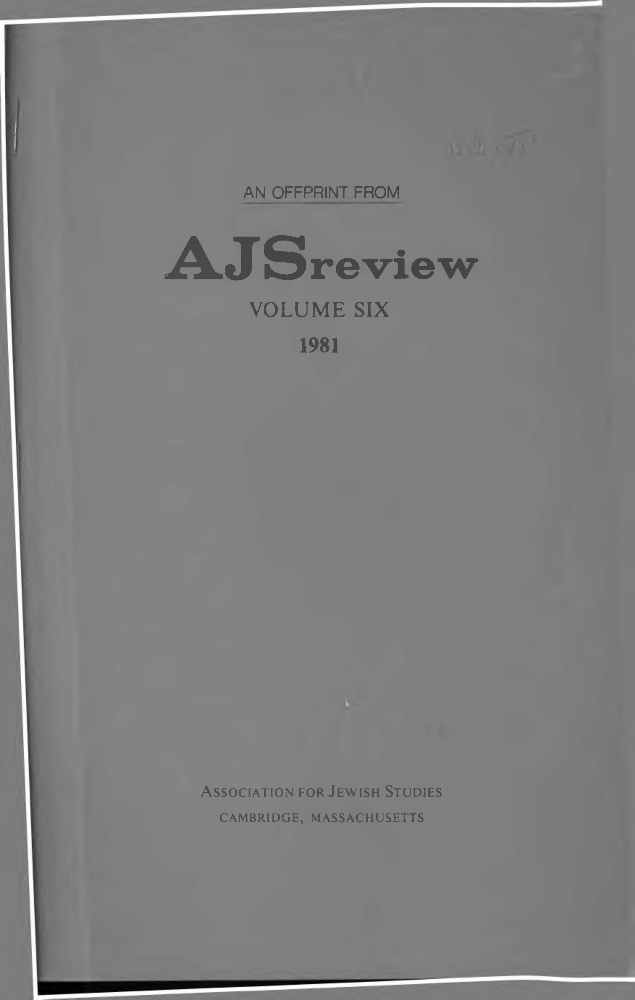

07a.21 The Nature of Resh in Tiberian Hebrew
AN OFFPRINT FROM
A JS review
VOLUME SIX
1981
Association for Jewish Studies
CAMBRIDGE, MASSACHUSETTS
THE NATURE OF RESH IN TIBERIAN HEBREW
by
E. J. REVELL
Records of pronunciation from early stages of a language are studied both for their interest for its general historical development and also for the light they may throw on variations in spelling. Such records were, then as now, necessarily couched in rather specialized language, and, being of limit ed interest, tended to suffer at the hands of copyists. For both reasons they are likely to present problems to the modern scholar. The information on resh is no exception.
This information presents an added complication, in that it states that two distinct sounds were identified as resh, i.e., resh was “realized” in two different ways. The sources fall into two main groups: i) Manuscripts with Babylonian pointing, in which resh is marked with dagesh and rafe on the same basis as are the six letters b, g, d, k, p, Z.1 The notice in the Sefer Ye^irah2 (2:2) which lists resh as one of the sheva kefulot begad keferet would seem to belong to this group. The description of the two realizations of resh in S. Morag’s article on this subject3 is based mainly on this group of sources, ii) The second group of sources consists of notices, such as that in
-
This is more common in the earlier forms of Babylonian pointing than in the later. See Israel Yeivin, Masoret ha-lashon ha-'ivrit ha-mishtaqqefet ba-niqqud ha-bavli (Jerusalem, 1973), p. 54.
-
Sefer Ye^irah is quoted from Joseph Qafih, Sefer Ye^irah . . . ‘ini perush ha-ga'on Rab-
benu Saadyah . . . (Jerusalem, 1972).
- Shelomo Morag, “Sheva‘kefulot begad keferet” in Sefer Tur Sinai (= Pirsumei ha- hevrah le-heqer ha-miqra be-Yisra'el 8) (Jerusalem, 1960), pp. 207-42. Quoted below as “Morag.”
125
126
E. J. REVELL
Saadya’s commentary on Sefer Ye^irah (4:3),4 describing the pronunciation of resh in the Tiberian biblical reading tradition. Resh is said to be realized in two different ways, referred to as dagesh and rafe or rakh, but the deter- mining factor is said to be the neighboring consonants (not, as presumably with group [i], the presence or absence of a preceding vowel). This material has recently been collected by N. Allony.5 His careful study of the origin and development of this tradition still leaves some points obscure: most notably, why the earliest source states that this two-fold realization (i.e., the use of two different sounds corresponding to the letter resh) is not characteristic of the Tiberian biblical tradition while all later sources state that it is. This paper presents a new attempt to understand the origin and development of the tradition, and the realization(s) of resh which it reflects.
The earliest description of the two-fold realization of resh is that attri- buted by Allony to Eli ben Yehudah ha-Nazir. His description of this phenomenon runs (literally translated):
As for resh, when six consonants are adjacent to it before it, resh is pro- nounced;6 and two consonants in front of it, that is after [it], if the consonant or the rd has sheva. But if it is pronounced with one of the vowels, resh does not emerge. The six consonants are d, z, {, s, p, t, and the two consonants are n, h
The possible interpretations of the first part of this statement are, as it seems to me, either (i) Realization A occurs (1) where d, z, l, s, or t precedes resh, or (2) where
8
- This commentary is quoted from Qafih’s edition (see n. 2) referred to below as “Qafih.”
The passage of interest here is on p. 116.
- See Nehemiah Allony, “‘Eli ben Yehudah ha-Nazir ve-hibburo ‘Yesodot ha-lashon
ha־‘ivrit,”’ in Leshonenu 34 (1970): 75-105, 187-209, referred to below as “Allony.”
- As Allony points out (p. 105, n. 167), this and its opposite “resh does not emerge” can hardly mean that in one case a consonant is audible, but in the other it is not. One possible explanation (consistent with the suggestion below that one realization is dental/alveolar, while the other is palatal/uvular), is that since resh and rd were synonyms (as they are in this passage), what is meant is that the sound of Arabic rd (alveolar) is or is not produced. Allony remarks (ibid., n. 164) that there may be a dot in the resh, characterizing this realization as dagesh but this would not explain the statement “resh does not emerge” which describes the other realization. ןא ץכי .7 דע]ב[ ]ן[יפרח לאו תצס
ןא י׳כאי וא; לא אר
הידי ]ף[רחאלאו
הלבק תאתוצמלא
ליק שיר אל
ךל׳ד]ו[ ולא טדז
םלעא ףרחלא
ו לאקי
ןאפ ןאכ
ןמ ןיב
]הרוא׳ג[
ןיפרחו
שיר
שירלא
אבשב
׳גר׳כי
דחאב
ףרחא
א׳דא
]ןמ[
לנ Allony, p. 104, 11. 51-56.
- The pronunciation of resh when influenced by the eight consonants is designated this
way to avoid the confusion of terminology in the sources (on which see below).
RESH IN TIBERIAN HEBREW
127
I or n follows resh, if there is sheva under d, z, /, s, $, or t in situation (1), or under resh in situation (2), or
(ii) Realization A occurs (1) where d, z, l, s, $, or t precedes resh, or (2) where I or n follows resh, if there is sheva under d, z, t, s, $, t, I, n, or resh.
It does not seem reasonable to argue (as does Allony)9 that the words, “If the consonant or resh has sheva,” mean that in situation (1) either d, z, t, s, or t or resh can have sheva, but that in situation (2) only resh can have sheva. The principal objection to Allony’s view is that, if resh can have sheva in situation (1), then a vowel can precede it, and this possibility is negated in the following statement: “if it is pronounced with one of the vowels, realiza tion A does not occur.” The subject of yakhruj here can only be “the con sonant or resh" from the end of the preceding sentence. This final statement also negates possibility (ii) above. Consequently this rule must be under stood: “Realization A occurs (1) where resh is preceded by d, z, [, s, $, or t, (2) where resh is followed by / or n, so long as the resh is not separated by a vowel from the preceding consonant in (1), or from the following consonant in (2).” Two later sources support this interpretation (see below).
The description of the two-fold realization of resh given in Saadya Gaon’s commentary on the Sefer Yesirah has generally been considered the most authoritative, but it also presents some problems. Saadya states that realization A occurs when d, z,t, s, $, or t precede resh, and either resh or the preceding consonant has sheva. This statement admits the possibility that realization A occurs when a resh with sheva is separated from the preceding consonant by a vowel, and the examples include cases like darkemonim where this does occur. However Saadya also states that realization A does not occur, “if there is between them [i.e., resh and the preceding consonant] any vowel.”10 This contradiction can only be resolved if the latter statement is taken to mean that realization A fails to occur only where both resh and the preceding consonant are followed by a vowel. If this was the meaning, it certainly could have been more clearly stated.
The actual wording of Saadya’s statement is very close to that of Eli ben
- Allony, p. 188. 10. אמהניב המגנ
אמ
ןאפ
. For the text see Allony, p. 189; Qafib, p. 116. The examples of the ןאכ two consonants separated by a vowel include (Gen. 43:11), which would show that the ירצ two consonants must not be separated by any sort of vowel—if the example originated with Saadya, and if he pronounced the fade with halef-qame$ (as the received pointing). However the use of the term המגנ here might suggest that the basis for Saadya’s work was not identical to that of the (early) Tiberian scholars, who would have used התוצמ (cf. Allony, p. 105, n. 166).
טעמ
128
E. J. REVELL
Yehudah, although the statements are differently arranged.11 It is quite pos- sible that Saadya based his description on that of Eli ben Yehudah, but incorrectly took the ambiguous statement, “If either the consonant [d, z, I, s, S, or z] or resh has sheva,” as applying in its entirety to situation (1) {resh preceded by d, z, /, s, or t) instead of partly to (1) and partly to (2) as sug- gested above. The suggestion is, then, that the description was rewritten to remove its ambiguity, but the erroneous clarification created a new contra- diction which was not noticed.
It may seem unreasonable (despite the fact that error is proverbially characteristic of humans) to suggest that a scholar like Saadya, with a repu- tation specifically in the area of linguistic study, should make a mistake of this sort. The suggestion that he did so is based on the assumption that he was attempting to present as clearly as possible the available information on a phenomenon with which he was not familiar. The alternative possibility, that he was familiar with the phenomenon and described it badly, seems less likely in view of his reputation. Saadya’s statement opens:
The two-fold pronunciation of resh is found among the Tiberians in the read- ing of the Bible, and among the Iraqis in their speech, but not in the reading of the Bible. ... As for the rules12 of the Iraqis on this, I searched for them, but did not find a source which summarized them.13
This last can be taken to mean that Saadya enquired among the leading Iraqi students of the biblical language for a description of the two-fold reali- zation of resh, but did not find an adequate one. Probably they were aware of a statement on this phenomenon, such as that in the Sefer Ye^irah, and had some explanation for it, but could offer no clear description of the two- fold realization of resh as a phonological fact, since it was not characteristic of their biblical pronunciation.14 Taken this way, this statement merely
described the two realizations as שיר
המגנ
- The major differences not imposed by different arrangement are merely that Saadya and אל
יפר/שגד
שירלא
ןאכ
, and uses
for the vowel between the consonants, not ׳גר׳כי 12. Rusum would most naturally refer to a written formulation. Meanings such as “usage”
אמ
rather than using the obscure תאתוצמלא
ליק שיר דחא .
are possible, but the choice of this root would imply usage based on a written statement.
םוסר .13 אלצא
אהעמגי
...
אמאפ םלפ דגנ אהל
ארקמלא
אל יפ אהאנסמתלאפ
םהמאלכ ךל׳ד
יפ
ןייקארעללו
יפ
ץייקארעלא
ארקמלא
שירלא ; Allony, p. 189; Qafih, p. 79.
ןיינארבטלל
הנאפ
יפ
ףעאצת
אמאו
- This must have been the Tiberian tradition as used in Babylonia, see Morag, pp.
233-34.
RESH IN TIBERIAN HEBREW
129
repeats and emphasizes Saadya’s preceding assertion that the two-fold reali zation of resh was not found in the biblical tradition of Iraq. The alternative view, that Saadya would make a personal investigation of the everyday speech of the people of Iraq with the intention of using it as the basis for an explanation of a statement, in an important ancient work, about the lan guage of the Bible, seems to be much less likely.15
Saadya continues with a statement that the rules of the Tiberians will be presented later.16 The fact that he reproduces these rules need not imply that he personally investigated the facts, or even that he was familiar with the two-fold realization of resh as a living phenomenon. He evidently simply did present (in revised form) the rules formulated by the Tiberian scholars in the statement attributed by Allony to Eli ben Yehudah, or in some similar one.
The suggestion that Saadya was not himself familiar with the double realization of resh would be incredible if the facts given in Eli ben Yehudah’s description were characteristic of the Tiberian tradition, but this was not the case. Eli ben Yehudah’s statement shows quite clearly that the two-fold realization was not used in the reading of the Bible.17 Furthermore an early description of Tiberian Hebrew (see below) notes carefully the difference between the two realizations of b, g, d, k, p, and t, but does not mention the two-fold realization of resh. No Tiberian text marks different values for resh, and the statements we have on the two realizations are not only insig
- Saadya viewed the history of Hebrew since Nehemiah’s time as a progressive decline (see N. Allony, Ha'Egron . . . by Rav Seadya Gaon [Jerusalem, 1969], p. 158, 11. 27-39, and my review in Journal of Semitic Studies 19 [1974]: 126). Consequently it is likely that if he thought the two-fold realization of resh to be a feature of the Tiberian biblical tradition, he would con- sider any evidence from daily speech irrelevant (Allony, however, does restore mention of the daily speech of Tiberias to Saadya’s account on the basis of different assumptions, p. 189). The use of the daily speech of Iraq to restore biblical Hebrew is doubly unlikely, since it would have been Aramaic (see Morag, pp. 220—21). However, a two-fold realization of resh does not occur in the (Tiberian) biblical tradition of Iraq, so Saadya does, for completeness, mention its occur- rence in the daily speech there. If his statement “I searched . . .” is to mean that he studied this feature in Iraqi speech, then “I did not find .. .” must mean that, despite his linguistic expertise, he was unable to describe it, which seems unlikely. If he merely meant that Iraqi usage did not fit the rules of the Tiberian masoretes, as suggested by Allony (p. 188), why did he not simply say it was different?
יפ
ריספת
קרפלא
אהרכ׳דנ
דלא .16 ןיינארבטלא 17. See the quotation in the next paragraph, and also Allony, p. 104,11. 47-48:
אמנאו . “As for resh resh [the אלו הוקסני double realization is indicated in the same way in Sefer Yesirah 2:2], no sign or rule existed for any facet of it except in the language of the people of the place in their speech and discourse.”
שר שיר
הראמא
להא
אלא
םהתגל
דלבלא
הנמ
]ן[מיס
אמאו.
קאיסו
סלפ
אנאפ
םוסר
יפ
ד׳גוי
׳גהל
ישל
130
E. J. REVELL
nificant in number compared to those on b, g, d, k, p, t, but are also con fused and contradictory, which would scarcely be possible if such two-fold realization really were characteristic of the tradition. On the basis of this evidence, then, we must argue that Saadya could not have been familiar with the two-fold realization of resh in any form of the Tiberian biblical tradi tion.
Saadya himself does state that the double realization of resh is character istic of the Tiberian biblical tradition, contradicting the reconstruction given above. However, as already noted, his statement also contradicts the testi mony of Eli ben Yehudah. The latter says:
There remains the real dagesh and rafe according to what the earlier scholars said, I mean [dagesh and rafe in] b, g, d, k, p, r, t, the seven consonants. However, people only pronounce them in the six. And as for resh—which no one ever pronounces [this way], nor is [a tradition of] it [with dagesh and rafe] found with one of the people of this our time or before our time who could make a masoretic rule or a guide for it—a revelation was made to me about it, and God in His goodness showed me the genuine comprehensive meaning of all which has been said about it.18
This statement shows clearly that no one known to Eli ben Yehudah either showed a two-fold realization of resh in his biblical reading, or knew of a masoretic description of such realization. In this context, the statement that he discovered facts corresponding to “all which has been said about it” must mean that Eli ben Yehudah knew a reliable source which stated that the two-fold realization of resh was once characteristic of the Holy Tongue, but which provided only vague information on the nature of the two realiza tions. The Sefer Ye^irah, a work regarded as both ancient and valuable, provides information of exactly this sort. On the basis of some source such as this, Eli ben Yehudah concluded that the double realization of resh was a lost feature of the biblical language, searched for traces of it, and believed that he had rediscovered the usage in the speech of Tiberias. Saadya’s state ment that a two-fold realization is characteristic of the biblical tradition of Tiberias need mean no more than that he accepted Eli ben Yehudah’s con clusion, and (as he obviously did) shared his belief.19
ןמיס הילע
לוקי
]ס[אנלא
ולא לע׳ג
אלא יפ הנא
18. עא דגב ]ה[ל ןמ דחאל אנל היפ אמ ליק 19. It is argued at the beginning of Allony’s article, that Eli ben Yehudah, who produced
יקבו י׳דלא אמאו ; Allony, p. 102,11. 36-42.
הולאק דחא התב לילד
ןילואלא ד׳גוי חת]פנא[פ
ףרחא אננאמז אנל
תרפכ סאנלא ראנאו
זלא יפ הללא
יקיקחלא םל
גדלא שירלא
א׳דה הפטלב
לבקו עמ
הל]ו[קי
אבנאמז
י׳דלאל
עמא׳ג
פרלאו
חיחצ
םלו
לכל
אלו
אלו
RESH IN TIBERIAN HEBREW
131
If we assume that Eli ben Yehudah’s source was the Sefer Ye$irah, the history of the passage can be reconstructed as follows.20 The author of the Sefer Ye^irah, who was interested in the Hebrew consonants not as lan guage, but as a microcosm symbolizing significant truths, added resh to the begad kef at letters to provide the group of seven which he needed for his argument. A linguistic situation which would justify this grouping is reflect ed in the Babylonian pointing (see above). No similar phenomenon is known from elsewhere, so it is highly likely that the notice in the Sefer Ye$irah derives from Babylonia.
The increasing prestige of the Sefer Ye$irah brought this passage to the notice of Western scholars. Since they regarded the work as an important ancient source, they assumed that the two-fold realization of resh which it mentions was a characteristic feature of the Holy Tongue when the passage was composed, but had since been lost. There was naturally some interest in rediscovering it. Resh was realized in two different ways in the speech of the citizens of Tiberias, and Eli ben Yehudah’s description of this was accepted as an accurate reconstruction of the feature ascribed to the earlier biblical pronunciation.
Saadya, in his commentary on the Sefer Ye^irah, had to explain the in clusion of resh among the “seven double letters.” He did what any scholar would do today. He collected the available information on the subject, and presented it as seemed best to him. Thus he notes that a two-fold realization of resh is characteristic of Iraqi speech. However the passage in the Sefer Ye$irah refers to the Holy Tongue, and his sole significant source for this was Eli ben Yehudah’s reconstruction. He presented this in a revised form, striving for greater clarity. That he did not notice that his revision intro duced a new contradiction is surprising, but the point was not important, so he may not have given it much attention.
Later forms of the notice on the two-fold realization of resh mostly follow Saadya in stating that this phenomenon appears only among the people of Tiberias, understanding Eli ben Yehudah’s designation of the group from which he got his information, ahi al-balad, as meaning “the
the earliest description of the double realization of resh, was Saadya’s teacher. If this were so, it would not be unrealistic to suppose that Saadya obtained from him an oral or written state ment of the rules, but not the details on which the statement was based (although it would be surprising, as Allony remarks, that he should give his teacher no credit). In fact, however, Allony’s identification, though possible, is by no means firm.
- If his source was some other work, the details of the reconstruction would differ, but
not its main outline.
132
E. J. REVELL
people of the city.”21 One exception to this is the notice in the Leningrad Manuscript,22 which ascribes the two-fold realization to the benei Ere$ Yisrael, understanding ahi al-balad as “the people of the land.” This notice also differs from that of Saadya in that it states that where resh is preceded by d, z, I, s, $, or t, realization A occurs only if the consonant preceding resh has sheva.13 This difference also can be explained by the suggestion that the account in L was taken directly from that of Eli ben Yehudah, or some simi- lar Tiberian account, and so avoided the error (here charged to Saadya) of stating that realization A can occur in this situation (situation 1) when resh has sheva (and the preceding consonant, by implication, a vowel).24
These two features, the ascription of the double realization of resh to the benei ’Ere$ Yisrael, and the absence of the statement on resh with sheva in situation (1) also occur in the first part of the notice in the Mahberet ha-tîjân, a treatise probably compiled in the thirteenth century.25 The description of this phenomenon given there differs from that ih the Lenin- grad Manuscript almost only in avoiding its errors, most significantly at the end of the notice, as follows:26
These eight consonants, six before resh and two after it, {(n, I,)) d, z, f, s, $, t, before it, and /, מ, after it, and only when there is sheva under the letter next to resh as we explained, but if it does not have sheva it [resh] is pronounced with dagesh.11
- As Allony, p. 104, n. 162.
- Dated 1010. A photographic facsimile, with introduction by David Samuel Loewinger, was published by Makor Press (Jerusalem, 1970). The notice appears on p. 313 of vol. 3, and is given in Allony, p. 192.
23.
יפרב
שיר
ול אוש אצי
ךומסה
תותאה
תחת
היהיו
תותא
הששל
שיר
ךמסי
רשאכ
. The Mahberet ha-tîjân
(see below) gives תואה for the erroneous תותאה.
-
Allony (p. 192) suggests that the notice in the Leningrad Manuscript was translated from that of Eli ben Yehudah, but that the translator was influenced by Saadya’s description because he mentions both Bible reading and everyday speech. However Saadya’s description as we have it does not mention the everyday speech of the Tiberians, nor does it mention the speech of Tiberian women and children (as does L) even with Allony’s restoration. The notice in the Leningrad Manuscript need be nothing more than an imaginative interpretation of that of Eli ben Yehudah.
-
See Allony, pp. 203—4. In the edition of this treatise by M. J. Dérenbourg (“Manuel du
Lecteur,” Journal Asiatique, 6ème série, 16 [1870]), the notice appears on p. 446.
- The double parentheses enclose material present in the Leningrad Manuscript but not in the Mahberet׳, the boldface type marks material present in the Mahberet but not in the Lenin- grad Manuscript. אוש .27 היהיש היהי
; Allony, p. 204, 11. 9-12.
נל ונראיבש
וינפלמ ומכ
דבלבו אל
))לנ(( תואה
דז סט תצ
אוש אצי
וירוחאמ
וירחאמ
תויתוא
שגדב
הנומש
ךומסה
שירל
שיר
השש
ינפלמ
תחת
םינשו
םאו
ולא
RESH IN TIBERIAN HEBREW
133
After the word be-dagesh in the Mahberet, the statement on resh with sheva in situation (1) (derived from Saadya) is added, as is a further rule, not given elsewhere. Both conflict with the initial statement. This shows that the com piler of this notice did not understand the statement, so it is most unlikely that he corrected the first part of it from the notice in the Leningrad Manu script. Consequently, it is highly probable that, up to the word be-dagesh, this notice in the Mahberet is a correct copy of the source miscopied in the Leningrad Manuscript. It is, then, the closest we can get to the first formula tion in Hebrew of the rules for the two-fold realization of resh, and the clearest statement we have of the original form of these rules.
The sources differ significantly in the use of the terms dagesh and rafe or rakh, which occur in all notices but that of Eli ben Yehudah. Saadya calls realization A dagesh and realization B rafe in his comment on Sefer Yesirah 4:3, but the terms he uses for the two realizations of b, g, d, k, p, r, t, in his translation of Sefer Ye$irah 2:2 are tashdid and irkha. These are cognate with the terms shadid and rikhwah used by Sibawaih in categorizing the Arabic consonants.28 Saadya was undoubtedly familiar with such categorization, so that, if as suggested below, realization A was dental/alveolar, and realiza tion B palatal, he would naturally categorize A as shadid = dagesh and B as rikhwa = rafe.2<) All other notices designate realization B as dagesh. This may simply reflect the fact that, in the few cases where the Tiberian text does mark dagesh in resh, that letter is neither preceded by d, z, /, s, $, or t, nor followed by / or n. According to the rules, realization B is required in such cases, so realization B would naturally be termed dagesh.
Whether or not this is the correct reason for the use of these terms, the way they are used emphasizes the individual nature of Saadya’s account, and fits the pattern of development suggested above. Saadya based his account on a statement such as that of Eli ben Yehudah, but he not only removed its ambiguity by inserting the (incorrect) statement that realization A occurs if resh preceded by d, etc. has sheva; he also remedied its lack of detail by including the terms dagesh and rafe as seemed natural. The notice in the Leningrad Manuscript, and the first part of that in the Mahberet,
-
The familiar term tashdid is the ma$dar of the transitive stem (II) of SDD. The term irkha, which I do not know from elsewhere, is presumably parallel: the masdar of the transitive stem (IV) of RKHW.
-
Sibawaih categorizes the dental Arabic rd as shadid, and ghain, the nearest Arabic sound to a palatal “r,” as rikhwa. See Khalil I. Semaan, Linguistics in the Middle Ages (Leiden, 1968), pp. 43-44.
134
E. J. REVELL
derive from a Tiberian source which not only inserted the terms dagesh and rafe on a basis different from Saadya’s, but also did not include the erro neous statement on resh with sheva. Those who copied these notices were, however, sufficiently influenced by Saadya’s account to include examples reflecting that erroneous statement, and the statement itself was appended to the Tiberian source in the Mahberet. The other notices collected by Allony also reflect this Tiberian source, as is shown by their application of the term dagesh, but they belong to a different stream, as is shown by the fact that rakh and not rafe is opposed to dagesh, that the two-fold realiza tion is ascribed to Tiberias, not to the benei ’Ere$ Yisrael, and that the erroneous statement on resh with sheva is incorporated into the body of the notice. These differences might well reflect a different translation of an Arabic source, and greater dependence on Saadya’s accoufit.
It appears, then, that the ascription of a two-fold realization of resh to the Tiberian biblical tradition arose from mistaken assumptions about an early source. The meager phonological information available not only pre sents no obstacle to this view, but shows a plausible picture consistent with it. The author of the Sefer Ye^irah lists resh among the “teeth” letters:30 z, s, $, r, sh. Presumably this view derives from the same source as his inclusion of resh with the letters b, g, d, k, p, t, and so represents (as far as we can tell) the Babylonian pronunciation. Saadya makes no comment on this classification of resh, so it must have agreed with his usage, presumably that of Egypt. In a form of the Hidayat al-qari represented by some Genizah frag ments, resh is included among the “palate” letters: g, y, k, r, q. There is no possibility of scribal error, since the statement is made more than once, in more than one fragment, and in a Hebrew translation from a similar or identical text.31 The description of the consonants is not a stereotyped list of
-
The clumsy caiques used here are preferable to the translation of the names of these “articulation groups” into modern technical terms, since they do not correspond. For Sibawaih, r, z, s, and are alveolar (articulated with the tongue at some point on the gum ridge) but shin is palatal, and we may note that Saadya found it natural to separate shin from the other members of this group (Qafih, p. 116). “Dental,” at first glance the obvious transla tion for “teeth letters” would, in modern terms, fit most comfortably d, I, I, n, t the “tongue letters” of the earlier terminology. I have offered a suggestion on the origin of this Hebrew ter minology in “The Diacritical Dots and the Development of the Arabic Alphabet,” Journal of Semitic Studies 20 (1975): 186.
-
For the Arabic form of this treatise, see Bodleian MS Heb. e76, fol. 2r (introduction) and Cambridge University Library fragments TS Arabic 31:79, 1H1, and TS NS 301:18a, lr2 (description of consonants). For the Hebrew form, see Bodleian MS Opp. 625, fol. 24Iv.
RESH IN TIBERIAN HEBREW
135
the five “articulation groups” but is clearly based on careful observation, as it takes pains to describe the difference between the two realizations of b, g, d, k, p, t. The passage on the “palate” letters runs
g, y, k, r, q, are articulated at the middle of the tongue with the breadth of it, and g, k, rafe, with the third of the tongue nearest the throat.32
This treatise opens with an introduction arguing that:
This reading tradition [i.e., the Tiberian tradition described in the treatise] which is in Eretz Israel is the tradition of Ezra the scribe and his generation, because the people was not separated from the land of Israel from the time of Ezra in the Second Temple until the present, but only from Jerusalem in the time when the Romans ruled the land; and Israel has been teaching this read- ing tradition to its children, generation after generation, up to the present.33
This passage clearly shows that the treatise was produced in Eretz Israel. The strong advocacy for the Tiberian reading tradition suggests that it was not yet generally accepted, but required support. Consequently the treatise must be quite early—earlier than the writings of Saadya Gaon according to the argument of Morag.34
In Eretz Israel, then, at the relatively early time when this treatise was composed, resh was palatal,35 and there was no knowledge of two realiza- tions of this letter in the biblical tradition. In Eli ben Yehudah’s day, however, resh was realized in two different ways in other forms of the lan- guage, at least in Tiberias. The phenomenon described by Eli ben Yehudah is quite different from that indicated by the Babylonian pointing, in which resh is marked with dagesh or rafe under the same conditions as are b, g, d, k,
). ןמ ץרא .33 ומלעי ליג הדה
םהדאלוא הארקלא
32.
ץאסללא
םוקלחלא
אממ ילי
. For the other four consonants, the rafe form is said to be articulated in the same position as the dagesh form, but to be distinguished by the fact that the articulators only touch lightly: ( קבטת קפרב for
ןייפרמלא
ץאסללא
אהלחמ
הצרעב
for
ת, ד,
קרכיג
תלת
קפרב
לחמו
פ ב,
קצלי
טסו
ךג
המאלא
תעטקנא
לארשיו
ץראלל ןאלא
ליג דעב
הליגו ןאמז
ןאל אמ ךלמ ; Bod. Heb. e76, fol. 2r2-12 (and TS Ar 31:79, lrl-5).
יפ ץרא ינש
]בתא[כלא טקפ
הארק אלא ןמ
ארזע םילשורי
הארקלא ןאמז
לארשי ילאו
]יה[ ןאלא
יפ תיב
םודא ילא
ארזע
ידלא
יפ
.הה ןמ
ןאלו לארשי
- Morag, p. 234. Aron Dotan suggests a date “not later than the tenth century’’ in
Encyclopedia Judaica (Jerusalem, 1971), 16: 1475.
- There is reason to believe that this was also true for the Hebrew of Qumran, see Elisha Qimron, A Grammar of the Hebrew Language of the Dead Sea Scrolls (Jerusalem, 1976), pp. 94-96.
136
E. J. REVELL
p, t. The description of Eli ben Yehudah shows that resh was affected by neighboring dental or alveolar consonants. Presumably in the neighborhood of these consonants, resh became dental or alveolar,36 a tendency which would be strengthened by, if it did not originate from, the general spread of Arabic as an everyday language. This “dentalization” of resh was not characteristic of the Tiberian biblical pronunciation in Eli ben Yehudah’s day. In Saadya’s time, it was not characteristic of the Tiberian tradition of Iraq either, and Saadya’s reference to its use by “the Tiberians” can be explained as referring to the (supposed) usage of the past. That is to say, this feature had not, at that time, penetrated the Tiberian reading tradition. Pre sumably the tendency to dentalization did eventually result in the use of a dental or alveolar resh in all Near Eastern forms of Hebrew (as the cor responding Arabic and Syriac consonants). All sources but the Hidâyat al-qâri list resh with the “teeth” letters, although the uniformity of the later sources may possibly be due to the prestige of descriptions such as that of the Sefer Ye^irah.
Department of Near Eastern Studies University of Toronto Toronto, Canada M5S 1A1
- The consonants which affect resh, d, z, t, s, s, t, I, and n, appear to be specifically those articulated in alveolar position or further forward in which tongue movement plays a signifi cant part. {Shin was presumably palatal, see n. 30; the information in Hiddyat al-qari on the “teeth” letters z, s, f, s, is vaguer than for any other group, which suggests that they were grouped on the basis of manner of articulation, rather than position.) The eight consonants affecting resh have no feature except position of articulation in common, so it is reasonable to suppose that they influenced the characteristic tongue position or movement for resh, a conclu sion supported by the interpretation of early terminology in Allony, pp. 94—95. It is, however, unlikely that the tongue position of one consonant would affect that of another if they were separated by a vowel, as a vowel would require a separate tongue movement.
